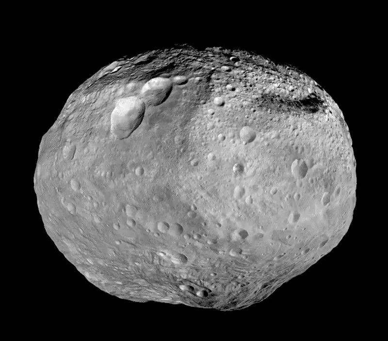

Asteroid (Sabuk Utama)
Asteroid merupakan benda langit berbatu atau bernikel-besi berukuran kecil hingga sedang yang utamanya mengorbit Matahari di wilayah Sabuk Utama (Main Asteroid Belt) antara orbit Mars dan Yupiter. Berbeda dengan planet, asteroid tidak memiliki massa yang cukup untuk mencapai kesetimbangan hidrostatik (berbentuk bola sempurna), sehingga mayoritas asteroid memiliki morfologi tidak teratur (asimetris). Asteroid dianggap sebagai sisa-sisa blok pembentuk planet (planetesimal) dari era awal pembentukan Tata Surya sekitar 4,6 miliar tahun lalu yang gagal menyatu menjadi planet akibat gangguan gravitasi (gravitational resonance) dari Yupiter yang sangat masif. Asteroid bervariasi dari tumpukan puing berpori (rubble-pile) hingga objek logam padat.